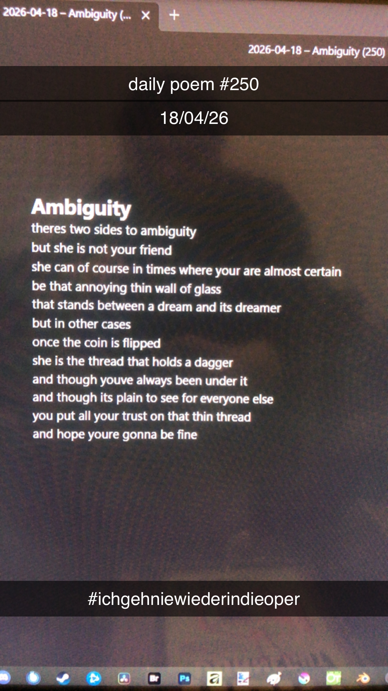

Ambiguity
[250]theres two sides to ambiguity
but she is not your friend
she can of course in times where your are almost certain
be that annoying thin wall of glass
that stands between a dream and its dreamer
but in other cases
once the coin is flipped
she is the thread that holds a dagger
and though youve always been under it
and though its plain to see for everyone else
you put all your trust on that thin thread
and hope youre gonna be fine

Anmerkungen
ich geh nie wieder in die oper